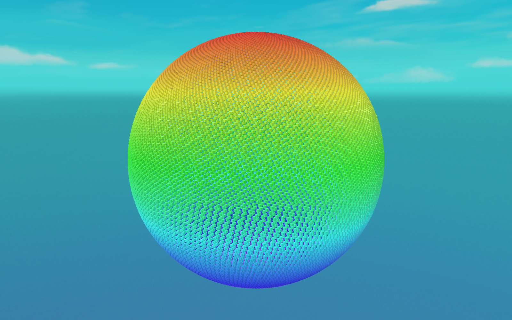

🌌 Lesson 4.5: Mini-Project — Simulating Thousands of Entities
Everything Module 4 taught, in one running scene. You'll bake a prefab, spawn tens of thousands of entities into a formation with a spawn system, and animate every one of them with a Burst-compiled IJobEntity — no GameObjects, no per-object Update. This is the moving, built-from-scratch version of the render that opened Lesson 4.1.
🎯 What You'll Build
- A baked entity prefab spawned in bulk from an authored
Spawner - A spawn system that instantiates 24,000 entities into a sphere formation and colours them
- An orbit system (Burst
IJobEntity, parallel) that spins the whole cloud every frame - A scene that renders it all through Entities Graphics at full frame rate
Estimated Time: 90 minutes · Prerequisite: Lessons 4.1–4.4 (all of Module 4) and Module 3
In This Lesson
The Goal
Here's the target — a real Unity 6 capture of the finished scene: 24,000 entities spawned from one baked prefab, arranged on a sphere and tinted by latitude, all rendered together and spun by a single parallel system.

IJobEntity orbits the entire cloud each frame; this is a single frame of it.The whole thing is three small scripts plus a scene. Because it's all entities and systems, it stays smooth where 24,000 GameObjects would crawl — the payoff of everything you've built.
Step 1: Components
Two data components: a Spawner singleton describing what and how many to spawn, and an OrbitSpeed the movement system reads.
using Unity.Entities;
public struct Spawner : IComponentData
{
public Entity Prefab; // the baked entity prefab to instantiate
public int Count; // how many
public float Radius; // sphere radius
}
public struct OrbitSpeed : IComponentData
{
public float Value; // radians/second the cloud rotates
}Step 2: Prefab & Spawner (Baking)
- Make a Cube prefab. Give its material a URP/Lit shader with Enable GPU Instancing on (so per-entity colour works).
- Create a SubScene and add an empty GameObject
Spawnerto it. - Add this authoring component and drag the cube prefab into its prefab slot.
using Unity.Entities;
using UnityEngine;
public class SpawnerAuthoring : MonoBehaviour
{
public GameObject prefab;
public int count = 24000;
public float radius = 45f;
class Baker : Baker<SpawnerAuthoring>
{
public override void Bake(SpawnerAuthoring authoring)
{
Entity entity = GetEntity(TransformUsageFlags.None);
AddComponent(entity, new Spawner
{
// bake the referenced prefab into its own entity
Prefab = GetEntity(authoring.prefab, TransformUsageFlags.Dynamic),
Count = authoring.count,
Radius = authoring.radius
});
}
}
}Baking turns the cube prefab into a renderable entity template and stores its handle on the Spawner singleton — exactly the entity-prefab pattern from Lesson 4.4.
Step 3: The Spawn System
This system runs once: it reads the Spawner, instantiates Count copies of the prefab through an EntityCommandBuffer (instantiation is a structural change), lays them out on a Fibonacci sphere, gives each an OrbitSpeed, and tints it by latitude. Then it disables itself.
using Unity.Burst;
using Unity.Collections;
using Unity.Entities;
using Unity.Mathematics;
using Unity.Rendering; // URPMaterialPropertyBaseColor
using Unity.Transforms;
[BurstCompile]
public partial struct SpawnSystem : ISystem
{
[BurstCompile]
public void OnCreate(ref SystemState state) => state.RequireForUpdate<Spawner>();
[BurstCompile]
public void OnUpdate(ref SystemState state)
{
state.Enabled = false; // spawn once, then stop
var spawner = SystemAPI.GetSingleton<Spawner>();
var ecb = new EntityCommandBuffer(Allocator.Temp);
float golden = math.PI * (1f + math.sqrt(5f)); // golden angle
for (int i = 0; i < spawner.Count; i++)
{
Entity e = ecb.Instantiate(spawner.Prefab);
// even points on a sphere (Fibonacci lattice)
float t = (i + 0.5f) / spawner.Count;
float phi = math.acos(1f - 2f * t);
float th = golden * i;
float sp = math.sin(phi);
float3 dir = new float3(sp * math.cos(th), math.cos(phi), sp * math.sin(th));
ecb.SetComponent(e, LocalTransform.FromPositionRotationScale(
dir * spawner.Radius, quaternion.identity, 0.7f));
ecb.AddComponent(e, new OrbitSpeed { Value = 0.3f });
// colour by latitude: blue (bottom) → red (top)
float c = dir.y * 0.5f + 0.5f;
float4 col = math.lerp(new float4(0.15f, 0.35f, 0.95f, 1f),
new float4(0.95f, 0.25f, 0.15f, 1f), c);
ecb.AddComponent(e, new URPMaterialPropertyBaseColor { Value = col });
}
ecb.Playback(state.EntityManager);
ecb.Dispose();
}
}Note everything in the loop is Burst-friendly math — no UnityEngine.Color, no managed calls — so the whole system compiles native. The URPMaterialPropertyBaseColor component is what Entities Graphics reads to tint each instance (it needs the material's GPU instancing, which is why we enabled it in Step 2).
Step 4: The Orbit System
Now the per-frame work. An IJobEntity rotates every entity's position (and rotation) around the Y axis, so the whole sphere spins as one — and it runs in parallel across every core, Burst-compiled:
using Unity.Burst;
using Unity.Entities;
using Unity.Mathematics;
using Unity.Transforms;
[BurstCompile]
public partial struct OrbitJob : IJobEntity
{
public float DeltaTime;
void Execute(ref LocalTransform transform, in OrbitSpeed orbit)
{
quaternion spin = quaternion.RotateY(orbit.Value * DeltaTime);
transform.Position = math.mul(spin, transform.Position);
transform.Rotation = math.mul(spin, transform.Rotation);
}
}
[BurstCompile]
public partial struct OrbitSystem : ISystem
{
[BurstCompile]
public void OnCreate(ref SystemState state) => state.RequireForUpdate<OrbitSpeed>();
[BurstCompile]
public void OnUpdate(ref SystemState state)
{
var job = new OrbitJob { DeltaTime = SystemAPI.Time.DeltaTime };
state.Dependency = job.ScheduleParallel(state.Dependency); // no Complete() — ECS handles it
}
}That's the entire runtime: 24,000 transforms updated every frame across all your cores, then handed to Entities Graphics to draw. There is no MonoBehaviour.Update anywhere in sight.
Run It
- Close the SubScene so its entities bake.
- Press Play. You'll see a slowly rotating sphere of thousands of coloured cubes — Figure 1, in motion.
- Open Window ▸ Entities ▸ Hierarchy and confirm the entity count (~24,001 including the spawner). Open the Systems window to see
SpawnSystem(now disabled) andOrbitSystemticking. - Open the Profiler: the
OrbitJobspreads across the worker lanes each frame while the main thread stays thin — the whole point of ECS.
⚠️ If nothing renders
Make sure Entities Graphics is installed (Lesson 4.2) and the prefab has a MeshRenderer with a URP material — baking reads those to attach the render components. No colour variation? Confirm Enable GPU Instancing is ticked on the material, or the per-instance URPMaterialPropertyBaseColor is ignored.
Tuning & Extending
- Scale it up. Raise
countto 100,000. It should still run smoothly — that headroom is exactly why ECS exists. - Give each entity its own motion. Add a per-entity
Velocityand drift them outward, or a noise-based wander, instead of a rigid orbit. - Destroy on a condition. Add a
Lifetimecomponent that ticks down and have a systemDestroyEntityvia an ECB when it hits zero — practise structural changes at scale. - Spawn from input. Move spawning into a system that reads a key press and instantiates a burst each time, instead of once at load.
✅ What you built — the whole stack
You used every Module 4 idea at once: components and archetypes (4.2), an ISystem with queries plus a parallel IJobEntity (4.3), and a baked entity prefab (4.4) — running on the data-oriented, Burst-compiled foundation from Module 3. That's DOTS end to end. Compare Figure 1 here with the wave field you hand-built in Lesson 3.5: same data-oriented idea, now expressed as real entities the framework manages for you.
Quick Quiz
Question 1: Why does SpawnSystem set state.Enabled = false at the top of OnUpdate?
Question 2: Why is the instantiation done through an EntityCommandBuffer?
Question 3: In OrbitSystem, why is there no Complete() call after ScheduleParallel?
Summary
🎉 Key Takeaways
- Author a Spawner that bakes a prefab into an entity template plus a count and formation.
- A run-once spawn system instantiates thousands via an
EntityCommandBuffer, positions them, and adds per-entity data (including colour) — all Burst-compiled withmath. - A parallel
IJobEntityanimates every entity each frame; assign tostate.Dependency, neverComplete()yourself. - Entities Graphics renders the lot;
URPMaterialPropertyBaseColor+ GPU instancing gives per-entity colour. - The result scales to tens (even hundreds) of thousands smoothly — the concrete payoff of the whole Performance & DOTS pillar.
🚀 What's Next?
That completes the Performance & DOTS pillar. Next we turn to how those pixels actually get drawn. Module 5: Advanced Rendering takes you below Shader Graph — into HLSL, custom render passes, and compute shaders — starting with Lesson 5.1: The URP Frame & the Frame Debugger.
🌌 Thousands, simulated
Bake, spawn, and move tens of thousands of entities with a handful of small scripts. You've now built the scale that DOTS promises — and you understand every layer under it.